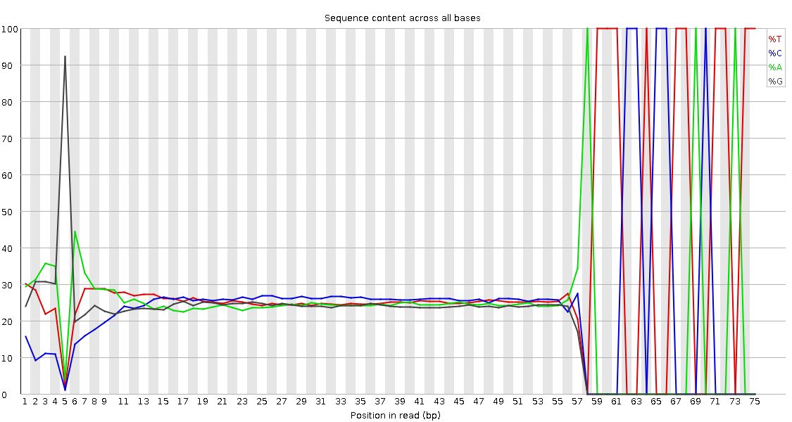

RNA-RNA interactome data analysis
OverviewQuestions:
Objectives:
What are the difficulties in mapping chimeric reads from RNA interactome data?
How multi mapping is a big problem in these datasets?
How to filter for meaningful results from large analysis output files?
Requirements:
Quality control and data preparation
Mapping chimeric reads
Quantification of the mapped loci
Visualization and filtering of results
- Introduction to Galaxy Analyses
- Sequence analysis
- Quality Control: slides slides - tutorial hands-on
- Mapping: slides slides - tutorial hands-on
Time estimation: 2 hoursSupporting Materials:Published: Mar 23, 2020Last modification: Nov 3, 2023License: Tutorial Content is licensed under Creative Commons Attribution 4.0 International License. The GTN Framework is licensed under MITpurl PURL: https://gxy.io/GTN:T00296version Revision: 17
With the advances in the next-generation sequencing technologies, genome-wide RNA-RNA interaction predictions are now possible. The most recent line of development has been to ligate the microRNA to the site-specific interaction region of the target, selecting these interactions via cross-linking to one of the Argonaute proteins required for microRNA-based regulation, and to sequence the resulting chimeric RNA molecule, for example, the CLASH and CLEAR-CLIP protocols. Going beyond microRNAs, these protocols can be applied to RNA interactions that involve a regulatory protein other than Argonaute. To generalize even further, researchers have applied the same idea to the detection of all transcriptome-wide RNA-RNA interactions, which include both inter- and intramolecular base pairing without the necessity of choosing a specific regulatory protein for cross-linking. These protocols include LIGR-Seq that maps the human RNA-RNA interactome and PARIS that focused on long-range structures in human and mouse.
The reads from these experiments are chimeric with each arm generated from one of the interaction
partners. Due to short lengths, often these sequenced arms ambiguously map to multiple locations and inferring the
origin of these can be quite complicated. Theoretically, alignment tools like HISAT2 and STAR can be used to align
chimeric reads, but they are not efficient at this task. The other alignment tools like BWA-MEM or Bowtie2 can be
used in local alignment settings to map these chimeric reads. In this case user needs to adjust the alignment parameters
to match the read lengths and there needs to be a lot of post-processing to be done to choose the best hits. Recently,
there is also an alignment tool called CLAN published to specifically map the chimeric reads from CLASH experiments.
In this tutorial, we will learn the analysis of a CLEAR-CLIP data set using a tool suite called ChiRA. The data used
is from mouse cortex sample
(GSM1881541) prepared using CLEAR-CLIP protocol. It is
a complete analysis framework that can be used starting from raw sequencing reads to analysis and visualization of
results. ChiRA uses BWA-MEM or CLAN to map the reads. Subsequently, it also merges the overlappig alignments and
chooses the best alignments per read by quantifying the all the loci that reads map to. In the end, it scores each
alignment and outputs only the best alignments per read. The final part of this tutorial gives an insight into how to
filter, export and visualize your results using the visualization framework ChiRAViz.
AgendaIn this tutorial, we will cover:
Get data
Hands-on: Data upload
- Create a new history for this tutorial
Import the files from Zenodo or from the shared data library
https://zenodo.org/record/3709188/files/miRNA_mature.fa.gz https://zenodo.org/record/3709188/files/Mus_musculus.GRCm38.dna.fa.gz https://zenodo.org/record/3709188/files/SRR2413302.fastq.gz https://zenodo.org/record/3709188/files/transcriptome.fa.gz https://zenodo.org/record/3709188/files/whole_transcriptome.gff.gz
- Copy the link location
Click galaxy-upload Upload Data at the top of the tool panel
- Select galaxy-wf-edit Paste/Fetch Data
Paste the link(s) into the text field
Press Start
- Close the window
As an alternative to uploading the data from a URL or your computer, the files may also have been made available from a shared data library:
- Go into Shared data (top panel) then Data libraries
- Navigate to the correct folder as indicated by your instructor.
- On most Galaxies tutorial data will be provided in a folder named GTN - Material –> Topic Name -> Tutorial Name.
- Select the desired files
- Click on Add to History galaxy-dropdown near the top and select as Datasets from the dropdown menu
In the pop-up window, choose
- “Select history”: the history you want to import the data to (or create a new one)
- Click on Import
- Rename the datasets
Check that the datatype
- Click on the galaxy-pencil pencil icon for the dataset to edit its attributes
- In the central panel, click on the galaxy-gear Convert tab on the top
- In the lower part galaxy-chart-select-data Datatypes, select
datatypes
- tip: you can start typing the datatype into the field to filter the dropdown menu
- Click the Save button
Add to each database a tag corresponding to …
- Click on the dataset to expand it
- Click on Add Tags galaxy-tags
- Add a tag starting with
#
- Tags starting with
#will be automatically propagated to the outputs of tools using this dataset.- Press Enter
- Check that the tag appears below the dataset name
Preprocessing
Before starting with the analysis of data it is always good to check the sequenced reads for low quality bases and adapters.
Quality control
Hands-on: Quality checkFirst use
FastQCto assess the read quality
- FastQC tool with the following parameters:
- param-file “Short read data from your current history”:
SRR2413302.fastq.gz(Input dataset)
Question
- Why do you think
FastQCfailed to find any adapters?
- Because
FastQCit uses a set of standard adapters to screen for adapters. The “special” adapters used in this library preparation are not present in theFastQCstandard adapters list.
Adapter trimming
Due to the inefficiency of the current RNA interactome protocols, not all reads are not made up of RNA hybrids. In some
cases, reads contain single RNA fragments with adapters or nothing but only adapters. Hence adapter removal is a very important step
in this analysis. In this step, we use cutadapt to trim the adapters. As the adapters used in this library are not
standard Illumina adapters, we need to provide them manually.
Hands-on: Adapter trimmingWe use
cutadaptto trim the adapter content
- cutadapt tool with the following parameters:
- param-file “FASTQ/A file”:
SRR2413302.fastq.gz(Input dataset)- In “Read 1 Options”
- “3’ (End) Adapters” -> “Insert 3’ (End) Adapters”
- “Source”:
Enter Custom sequence- “Enter custom 3’ adapter sequence”:
GTGTCAGTCACTTCCAGCGG- “5’ (Front) Adapters” -> “Insert 5’ (Front) Adapters”
- “Source”:
Enter Custom sequence- “Enter custom 5’ adapter sequence”:
GCATAGGGAGGACGATGCGG- In “Filter Options”
- “Minimum length”:
16
Hands-on: Post adapter trimming quality checkIt is interesting to see whether our manually entered adapters were trimmed
- FastQC tool with the following parameters:
- param-file “Short read data from your current history”:
Read 1 Output(output of cutadapt tool)- Observe the Per base sequence content 
QuestionWould you be concerned about the abnormal “Per base sequence content towards the end”?
Normally yes, but in this case not. Always look at this plot in combination with “Sequence Length Distribution” plot. It looks like there is huge difference in base composition after 55th base. But the number of sequences that constitute this is very important. From the sequence length distribution, most of the sequences are between 53 and 57 bases long. We see the abnormality in the per base sequence content because it is from very few sequences.

Analysis of interactome data using ChiRA tool suite
The analysis includes several steps that deal with deduplication mapping, quantification and extraction of interacting partners.
Remove duplicate sequences
First, we eliminate the duplicate sequences from the library to reduce the computational effort. This will also have an impact on the quantification of the loci because often these identical sequences might be PCR duplicates. There is also a 5’ degenerate linker of length 5 nucleotides present in the reads. Hence we have to strip that too.
Hands-on
- ChiRA collapse tool with the following parameters:
- param-file “Input FASTQ file”:
Read 1 Output(output of cutadapt tool)- “Length of the UMI if present at the 5’ end of your reads”:
5
- If you have UMIs (at the 5’ end) in the sequenced reads, please set “Length of the UMI if present at the 5’ end of your reads”.
- The UMI will be trimmed and put in the unique sequence id.
Map reads to the reference transcriptome
Hands-on: Map chimeric reads from fasta fileHere we use
BWA-MEMaligner in local alignment mode to locate the chimeric arms on the transcriptome. Your reference can be single or split in two. Two references are ideal for example if you have CLASH experimental data where you have separate miRNA and target references.
- ChiRA map tool with the following parameters:
- param-file “Input FASTA file”:
fasta file(output of ChiRA collapse tool)- “Single or split reference?”:
Split reference
- param-file “Reference FASTA file”:
miRNA_mature.fa.gz(Input dataset)- param-file “Second reference FASTA file”:
transcriptome.fa.gz(Input dataset)- “aligner”:
BWA-MEM
Merge overlapping alignment information
In this step, we merge the overlapping aligned positions to define the read concentrated loci. If an annotation GTF file produced, the transcriptomic alignment positions are first converted to their corresponding genomic positions. The merging is also done on reads defining which parts of the reads are mapping that indicates potential interacting segments of read.
Hands-on
- ChiRA merge tool with the following parameters:
- param-file “Input BED file of alignments”:
ChiRA aligned BED(output of ChiRA map tool)- “Do you have an annotation in GTF format?”:
Yes
- param-file “Annotations in GTF format”:
whole_transcriptome.gff.gz(Input dataset)- “Did you use single or split reference for alignment?”:
Split reference
- param-file “Reference FASTA file”:
miRNA_mature.fa.gz(Input dataset)- param-file “Second reference FASTA file”:
transcriptome.fa.gz(Input dataset)
- In samples with a very high coverage, the likelihood of having overlapping alignments increases. Hence the default
Overlap basedmerging may results in very long loci merged by some random alignments.- Therefore, use the
blockbustermerging mode and adjust the paramertes accordingly.
- From “Select the mode of merging”:
Gaussian based (blockbuster)- Working with only the chimeric reads further reduces the computation time fr subsequent steps.
- “chimeric_only”:
Yes
Quantify aligned loci to score the alignments
Now we have the loci where the potential interacting read segments are mapped to. Due to the small length of these arms, there is a
very high chance of multi mapping. Another reason for this is the lenient mapping parameters that are used to increase
the mapping sensitivity. Quantification needs 2 files containing read segements and loci where they are mapping to. From
this information, ChiRA quanitify tries to infer the correct origin of reads and calculates the expression of the loci
using a simple expectation-maximization algorithm.
Hands-on: Task description
- ChiRA qauntify tool with the following parameters:
- param-file “BED file of aligned segments”:
ChiRA aligned read segments(output of ChiRA merge tool)- param-file “Tabular file of merged alignments”:
ChiRA merged alignments(output of ChiRA merge tool)
Extract the best scoring chimeras
After having the information about the loci expression, the final step extracts only the best scoring interacting
partners for each read. All the combinations of the transcripts that are overlapping with the interacting loci are
reported. If there is more than one locus with the equal best score then all the best hits are reported. If you have the
genomic fasta file the tool can hybridize the interacting loci sequences using IntaRNA.
Hands-on: Task description
- ChiRA extract tool with the following parameters:
- param-file “File containing CRLs information”:
ChiRA quantified loci(output of ChiRA qauntify tool)- “Have genomic information?”:
Yes
- param-file “Annotations in GTF format”:
whole_transcriptome.gff.gz(Input dataset)- “Choose the source for the FASTA file”:
History
- param-file “FASTA file”:
Mus_musculus.GRCm38.dna.fa.gz(Input dataset)- “Did you use single or split reference for alignment?”:
Split reference
- param-file “Reference FASTA file”:
miRNA_mature.fa.gz(Input dataset)- param-file “Second reference FASTA file”:
transcriptome.fa.gz(Input dataset)- “Hybridize chimeric loci?”:
Yes- “Summarize interactions at loci level?”:
Yes
Visualization
The output tabular file generated in the above step can be huge with up to some millions of rows depending on the
library size and more than 30 columns. Extracting useful data from this can be very tedious. For example, extracting and
visualizing the distribution of target biotypes of your favorite miRNA can be very tricky and might need more than a
hand full of galaxy tools to achieve. For this reason, there exists a visualization and filtering tool for this data along
with ChiRA known as ChiRAViz. It is a galaxy visualization framework to work with the output of ChiRA. But it does
not directly work with the tabular output we have. Rather it needs a “sqlite” database. For this reason, we first build a
sqlite database from the ChiRA output.
Hands-on: Data preperation
- Query Tabular tool with the following parameters:
- In “Database Table”:
- param-repeat “Insert Database Table”
- param-file “Tabular Dataset for Table”:
ChiRA chimeric reads(output of ChiRA extract tool)- In “Table Options”
- “Use first line as column names”:
Yes- “Save the sqlite database in your history”:
YesChange the datatype to
chira.sqlite
- Click on the galaxy-pencil pencil icon for the dataset to edit its attributes
- In the central panel, click on the galaxy-gear Convert tab on the top
- In the lower part galaxy-chart-select-data Datatypes, select
chira.sqlite
- tip: you can start typing the datatype into the field to filter the dropdown menu
- Click the Save button
Hands-on: Visualize interactions
- Please click on galaxy-barchart “Visualize this data”. Then click on the
ChiRAVizvisualization. This loads the data into the visualization framework and shows some basic plots from the data.
- The visualization split into two to show the left and the right arms information.
- On home page pie charts of left and right chimeric arms, types of interactions and top 50 expressed RNAs are shown.
Now choose the bio types of interactions that you want to work with. Here we first get all available interactions, and then filter the interactions we are interested in next page. To get all interactions, choose
allin both dropdowns on the top and then click on “Get interactions”.

{kind=link}
{kind=link}
Hands-on: Filter and summarize interactions and export the results
ChiRAVizprovides filters to search for keywords like gene symbols, sort interactions by score, filter by score or hybridization energy. Then the filtered interactions can be summarized or exported to a file. In this step, we filter the interactions thatmmu-miR-190ainvolved in and consider those which have anIntaRNApredicted hybrid.
- To search, type
mir-190ain the search field and click on search icon or hit enter. Search is case insensitive and can search for sub-phrases too. This results in 27 records.- We now further filter the records that contain
IntaRNAhybrid. If there is no hybrid predicted byIntaRNA, then the hybrid filed contains anNAvalue.
- From ”–filter–“ dropdown choose
Hybrid- From ”–operator–“ choose
<>- Enter
NAin the value field and hit the enter key. This filters out 10 more records and results in 17 records.- At this point, you can select individual interactions by clicking the individual checkboxes or by clicking “Check all”. Both the possibilities are highlighted in red color in the following figure.
- Click on Summary to view the summary plots for the selected interactions.
- Clicking on Export to export the selected interactions to a file.
{kind=link}
Question
- Which strand of
mmu-miR-190ais the most expressed?Both strands of
mmu-miR-190aparticipated in the interactions, butmmu-miR-190a-5pis the most abundant strand between the two.
Hands-on: Viewing individual interaction information
- From the list of interactions in the left panel expand the interaction
mmu-miR-190a-5p:Myo5aby clicking on “+” (highlighted in red). There are 4 sub-records corresponds to 4 different transcripts of the target geneMyo5a.- Click on one of the records to view following information.
- “Chimera” panel in the middle depicts the mapping positions on the read with read length.
- “Interacting partners” panel shows the information on which transcripts the left and right arm are mapping to with their alignment positions on the transcripts.
- “Alignment Information” panel shows the alignment if present with a possibility to download the alignment.
{kind=link}
Conclusion
Though chimeric reads look normal when inspected in a FASTQ file, the origin of each read is from two different RNA fragments. Limitations of the current sequencing protocols limit the length of each sequenced interacting RNA fragment. These smaller RNA fragments are often harder to map considering that the boundaries of each RNA fragment in the read are unknown. In this tutorial, we have seen how to map these reads and infer the true origins of them by quantifying the mapped loci. The visualization framework gives flexibility in filtering and searching output files, visualize the summaries of filtered data as well as exporting them.
Key points
Choosing the correct alignment parameters is one of the imporatant factor in the analysis.
For poorly annotated organisms use reference genome instead of trascriptome.
Frequently Asked Questions
Have questions about this tutorial? Check out the tutorial FAQ page or the FAQ page for the Transcriptomics topic to see if your question is listed there. If not, please ask your question on the GTN Gitter Channel or the Galaxy Help ForumUseful literature
Further information, including links to documentation and original publications, regarding the tools, analysis techniques and the interpretation of results described in this tutorial can be found here.
Feedback
Did you use this material as an instructor? Feel free to give us feedback on how it went.
Did you use this material as a learner or student? Click the form below to leave feedback.

Citing this Tutorial
- Pavankumar Videm, RNA-RNA interactome data analysis (Galaxy Training Materials). https://training.galaxyproject.org/training-material/topics/transcriptomics/tutorials/rna-interactome/tutorial.html Online; accessed TODAY
- Hiltemann, Saskia, Rasche, Helena et al., 2023 Galaxy Training: A Powerful Framework for Teaching! PLOS Computational Biology 10.1371/journal.pcbi.1010752
- Batut et al., 2018 Community-Driven Data Analysis Training for Biology Cell Systems 10.1016/j.cels.2018.05.012
Congratulations on successfully completing this tutorial!@misc{transcriptomics-rna-interactome, author = "Pavankumar Videm", title = "RNA-RNA interactome data analysis (Galaxy Training Materials)", year = "", month = "", day = "" url = "\url{https://training.galaxyproject.org/training-material/topics/transcriptomics/tutorials/rna-interactome/tutorial.html}", note = "[Online; accessed TODAY]" } @article{Hiltemann_2023, doi = {10.1371/journal.pcbi.1010752}, url = {https://doi.org/10.1371%2Fjournal.pcbi.1010752}, year = 2023, month = {jan}, publisher = {Public Library of Science ({PLoS})}, volume = {19}, number = {1}, pages = {e1010752}, author = {Saskia Hiltemann and Helena Rasche and Simon Gladman and Hans-Rudolf Hotz and Delphine Larivi{\`{e}}re and Daniel Blankenberg and Pratik D. Jagtap and Thomas Wollmann and Anthony Bretaudeau and Nadia Gou{\'{e}} and Timothy J. Griffin and Coline Royaux and Yvan Le Bras and Subina Mehta and Anna Syme and Frederik Coppens and Bert Droesbeke and Nicola Soranzo and Wendi Bacon and Fotis Psomopoulos and Crist{\'{o}}bal Gallardo-Alba and John Davis and Melanie Christine Föll and Matthias Fahrner and Maria A. Doyle and Beatriz Serrano-Solano and Anne Claire Fouilloux and Peter van Heusden and Wolfgang Maier and Dave Clements and Florian Heyl and Björn Grüning and B{\'{e}}r{\'{e}}nice Batut and}, editor = {Francis Ouellette}, title = {Galaxy Training: A powerful framework for teaching!}, journal = {PLoS Comput Biol} Computational Biology} }
Galaxy Administrators: Install the missing toolsYou can use Ephemeris's
shed-tools installcommand to install the tools used in this tutorial.shed-tools install [-g GALAXY] [-a API_KEY] -t <(curl https://training.galaxyproject.org/training-material/api/topics/transcriptomics/tutorials/rna-interactome/tutorial.json | jq .admin_install_yaml -r)Alternatively you can copy and paste the following YAML
--- install_tool_dependencies: true install_repository_dependencies: true install_resolver_dependencies: true tools: - name: fastqc owner: devteam revisions: e7b2202befea tool_panel_section_label: FASTA/FASTQ tool_shed_url: https://toolshed.g2.bx.psu.edu/ - name: chira_collapse owner: iuc revisions: 2b2bfeda00d0 tool_panel_section_label: RNA Analysis tool_shed_url: https://toolshed.g2.bx.psu.edu/ - name: chira_extract owner: iuc revisions: e7ee3aadf1a5 tool_panel_section_label: RNA Analysis tool_shed_url: https://toolshed.g2.bx.psu.edu/ - name: chira_map owner: iuc revisions: 95ddee768b61 tool_panel_section_label: RNA Analysis tool_shed_url: https://toolshed.g2.bx.psu.edu/ - name: chira_merge owner: iuc revisions: 6492560fe1b4 tool_panel_section_label: RNA Analysis tool_shed_url: https://toolshed.g2.bx.psu.edu/ - name: chira_quantify owner: iuc revisions: 06ac35533793 tool_panel_section_label: RNA Analysis tool_shed_url: https://toolshed.g2.bx.psu.edu/ - name: query_tabular owner: iuc revisions: 33d61c89fb8d tool_panel_section_label: Text Manipulation tool_shed_url: https://toolshed.g2.bx.psu.edu/ - name: cutadapt owner: lparsons revisions: 49370cb85f0f tool_panel_section_label: FASTA/FASTQ tool_shed_url: https://toolshed.g2.bx.psu.edu/